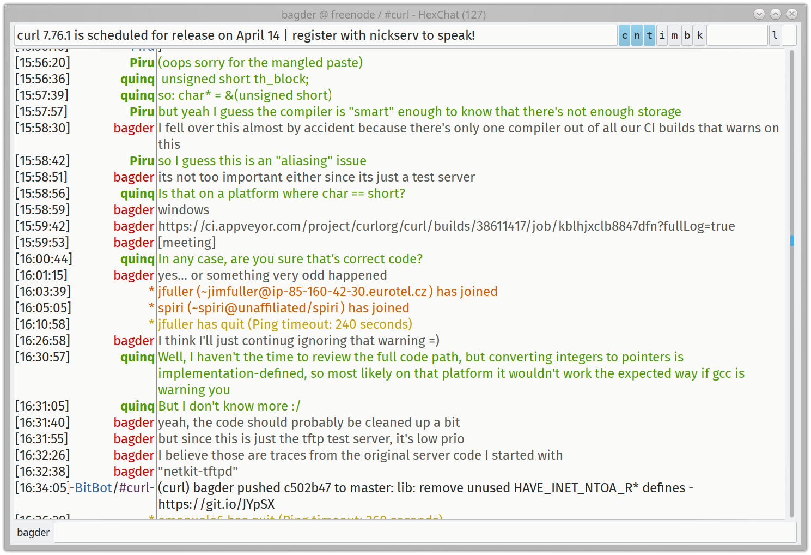

We have an always-open never-sleeping 24/7 chat room available to discuss any and all curl and libcurl related topics whenever you want.
This is the only official curl chat. You will find that some of the curl core team developers frequent this chat. SUBTITLE(Participate)
Neither method requires that you reveal your real name, actual identity, where are located, or any other personal information. You decide what you are called and what you want to share. SUBTITLE(Speak)
Be friendly and polite. We prefer curl oriented topics and subjects, but we are also tolerant and open for excursions into related areas of technology and development.
The chat room is often visited by 200 or more concurrent participants - many of them idling for the moment.
Joking is fine, but do it with respect for your fellow chat pals. We operate under a code of conduct. SUBTITLE(What if nobody responds)
There is no guarantee anyone wants to respond or that anyone who reads right now even knows the answer to your question. Consider maybe post your questions or thoughts on a suitable mailing list? or GitHub discussions? SUBTITLE(Screenshot)
A screenshot example of a discussion in the #curl channel from early April 2021. Seen here in action is the Linux IRC client hexchat. The time stamps on the left are shown using the local time zone of Daniel ('bagder') Stenberg.
 #include "_footer.html"